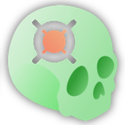

ALI
ALI ne calcule rien lui-même : c'est un widget de dispatch qui choisit entre deux backends sans code commun — ALI_CBCT (agents de renforcement qui se déplacent dans un volume) et ALI_IOS (rendu multi-vues et segmentation par pixel sur maillage) — pour poser des landmarks anatomiques en LPS.
1. Situation dans la chaîne
ALI est un fournisseur de repères pour presque tout le dépôt. Le widget lui-même n'est appelé par personne ; les deux CLI, si.
| Appelant | Backend | Comment | Pourquoi |
|---|---|---|---|
ALI.py:999 | ALI_CBCT | slicer.cli.run(slicer.modules.ali_cbct, …) | usage direct |
ALI.py:1246 | ALI_IOS | conda run -n shapeaxi python -m ALI_IOS | usage direct |
ASO_Method/CBCT.py:515 | ALI_CBCT | slicer.cli.run | landmarks pour l'orientation SEMI_ASO |
AREG_Method/IOSCBCT.py:300 | les deux | slicer.cli.run | 12 points occlusaux sur CBCT et sur IOS, pour recaler l'un sur l'autre |
GreedyReg_Method/Logic.py:493 | ALI_CBCT | slicer.cli.run | « Distant Registration » : recalage par landmarks |
FlexReg.py:2517 | ALI_IOS (Lower_MG_*.pth) | conda run -n shapeaxi | les 13 points mucogingivaux du patch MGL |
Agent_CLI/manifest.yaml:2 | les deux | pipeline distant | déclarés ali_cbct / ali_ios |
Côté sortant :
| Appelé | Quand | Pourquoi |
|---|---|---|
CrownSegmentationcli (ShapeAXI) | IOS, si un scan n'a pas d'array de labels | segmenter les couronnes — les caméras sont visées dent par dent |
dentalmodelseg directement | IOS, depuis le CLI lui-même (segmentation.py:80) | même chose, quand le CLI est lancé hors du widget |
Le CLI ALI_IOS sait donc se segmenter tout seul et le widget le segmente en amont : deux chemins pour la même chose, hérités l'un de l'autre.
2. Fichiers en jeu
| Fichier | Rôle | Où ça tourne |
|---|---|---|
ALI/ALI.py | widget, 2286 lignes : dispatch, UI, téléchargement des poids, boot conda | Python de Slicer |
ALI_Method/CBCT.py | construit les paramètres d'ALI_CBCT | idem |
ALI_Method/IOS.py | construit ceux de la segmentation + d'ALI_IOS | idem |
ALI_CBCT/ALI_CBCT.py | CLI, 270 lignes : prétraitement puis boucle agents | Python de Slicer, via slicer.cli.run |
ALI_CBCT_utils/ | agent, brain, environment, preprocess | idem |
ALI_IOS/ALI_IOS.py | CLI, 688 lignes : une seule fonction main de 500 lignes | env conda shapeaxi |
ALI_IOS_utils/ | agent (caméras), render, surface, model (tables), io, orientation, segmentation | idem |
Point non évident : ALI_CBCT ne passe pas par conda. Il tourne dans le Python de Slicer, d'où l'installation de itk, dicom2nifti, pydicom et monai par install_function (ALI.py:875). ALI_IOS a besoin de pytorch3d, qui n'existe pas dans Slicer : il passe par conda run. CUDA n'est requis nulle part — les deux tombent sur CPU (DEVICE = cuda if available else cpu), au prix du temps.
Le CLI ALI_IOS est aussi enregistré comme module Slicer (slicer.modules.ali_ios, ALI_IOS.xml) et AREG l'appelle par ce biais — dans le Python de Slicer, donc, où pytorch3d n'est pas installé. Chemin fragile, voir §7.
3. ALI_CBCT — agents dans le volume
Focus).3.1 Prétraitements
Deux étapes, toutes deux écrites dans temp_fold et jamais nettoyées :
- Fenêtrage d'histogramme,
CorrectHisto(scan, out, 0.01, 0.99)(preprocess.py:27) : histogramme à 1000 bins, cumulé normalisé, on clippe aux percentiles 1 % et 99 %, bornés en dur à[-1500, 4000]HU. Sortieint16, spacing/origine/direction conservés. Attention : la signature par défaut ditmax_porcent=0.95, l'appel passe0.99. - Resampling isotrope, un fichier par échelle :
SetSpacing(itk, interpolation linéaire — plus proche voisin siseg/Segest dans le nom) pour chaquespdespacing = [1, 0.3]mm. La nouvelle taille estsize * spacing / spet l'origine est recentrée sur la même boîte physique.
Les fichiers sont nommés <stem>_sp<1|0-3><suffixes> et ré-utilisés s'ils existent déjà : c'est un cache, donc aussi un piège si l'entrée change sans changer de nom.
Au chargement (environment.py:81) : sitk.DICOMOrient(img, "LPS") — sans ça, les agents, qui ne lisent que l'array brut et jamais les cosinus directeurs, parcourent un volume miroir. Puis EnsureChannelFirst + BorderPad(padding) avec padding = agent_FOV/2 + 1 = [33,33,33], pour que tout crop de 64³ soit valide où que soit l'agent.
L'array est stocké en ordre numpy (z,y,x) et l'origine est retournée dans le même ordre — mais pas le spacing, qui reste (x,y,z). C'est sans effet uniquement parce que le resampling rend le spacing isotrope.
3.2 L'environnement
Environment (environment.py:26) est un patient : un dictionnaire {scale_key: {image, spacing, origin, size}} et la liste des landmarks prédits. Une instance par patient, toutes les échelles chargées en mémoire.
GetZone(scale, center, crop_size) est la seule chose que l'agent voit du monde :
cropTransform = SpatialCrop(center.tolist() + self.padding, crop_size)
rescale = ScaleIntensity(minv=-1.0, maxv=1.0, factor=None)
crop = rescale(cropTransform(self.data[scale]["image"])).type(torch.float32)Un cube de 64×64×64 voxels centré sur l'agent, renormalisé par crop en [-1,1] (min/max locaux, pas une normalisation globale). À l'échelle 1 il couvre 64 mm de côté, à l'échelle 0-3 19,2 mm.
3.3 L'agent et son réseau
Un agent par landmark (agent.py:73), instancié une fois puis ré-utilisé pour tous les patients. Un Brain neuf est construit et ses poids relus pour chaque couple (patient, landmark) (ALI_CBCT.py:194) — 2 DenseNet reconstruits et 2 .pth relus par point et par scan.
Le réseau, DNet (brain.py:48) :
self.featNet = DenseNet(spatial_dims=3, in_channels=1, out_channels=1024,
growth_rate=34, block_config=(6, 12, 24, 16))
self.dens = DN(in_channels=1024, out_channels=6) # MLP 1024-512-256-128-6DenseNet-121 3D de monai (growth rate 34 au lieu de 32), suivi d'un MLP à 4 couches. Entrée [1, 1, 64, 64, 64], sortie 6 scores, un par mouvement : Up / Down / Back / Front / Left / Right — soit ±1 voxel sur chacun des trois axes de l'array (constants.py:22).
Ce n'est pas une heatmap : c'est une classification de direction. Le réseau prédit ne dit pas où est le point, il dit vers où marcher. Predict prend l'argmax des 6 scores (brain.py:166).
À noter : DN.forward applique un relu sur la dernière couche aussi. Les scores sont donc ≥ 0 et, si toutes les pré-activations sont négatives, les 6 valent 0 et argmax renvoie systématiquement 0 (« Up »). Le softmax commenté juste en dessous suggère que ce n'était pas l'intention.
Un réseau par échelle : Brain en instancie un par scale_key et LoadModels charge <label>/1/*.pth puis <label>/0-3/*.pth.
3.4 La recherche
Agent.Search() (agent.py:242) :
- échelle 0 (1 mm), position au centre du volume ;
- boucle :
PredictAction()→Move()d'un pas despeed_per_scale[scale]= 1 voxel ; - critère d'arrêt = oscillation.
Visited()teste si la position courante figure dans les 10 dernières positions (shortmem_size = 10). Quand l'agent revient sur ses pas, il est considéré comme arrivé ; UpScale(): passage à l'échelle0-3, position convertie par le rapport des spacings, mémoire courte vidée, et on recommence ;- à la dernière échelle,
Visited()termine la recherche.
Budget de temps : 15 s sur GPU, 60 s sur CPU, par landmark et par patient, surchargeable par ALI_SEARCH_MAX_TIME. Dépassement → -1, landmark non écrit. Idem si l'agent sort trois fois du volume (search_atempt > 2) ; à chaque sortie il est re-spawné aléatoirement (spawn_radius = 10 voxels autour du départ, aux échelles > 0).
Le raffinement final, Focus() (agent.py:215) : depuis la position trouvée, six re-départs à 4 voxels (1,2 mm à l'échelle finale) le long de ±x, ±y, ±z ; chacun re-marche jusqu'à Visited() ; la position retenue est la moyenne des six arrivées. C'est ce qui rend le résultat sous-voxel.
Focus n'a aucune borne : ni temps, ni nombre de pas, ni test de search_atempt. Un agent qui sort du volume y est re-spawné aléatoirement et la boucle while not found repart de zéro.
3.5 Sortie
SavePredictedLandmarks(scale_keys[-1], output_dir) (environment.py:118) reconvertit l'indice en coordonnée physique :
physical_origin = abs(ref_origin / ref_spacing)
real_label_pos = (pos - physical_origin) * ref_spacing
real_label_pos = [real_label_pos[2], real_label_pos[1], real_label_pos[0]] # retour x,y,zLe abs() suppose l'origine négative sur les trois axes — vrai pour un volume LPS centré, faux en général.
Les points sont groupés par famille anatomique (LABEL_GROUPS : CB, U, L, CI) et écrits un fichier par groupe : <patient sans extension>_lm_Pred_<groupe>.mrk.json, coordinateSystem: "LPS", description toujours vide (io.py:5). GreedyReg reflippe en RAS (Logic.py:518).
3.6 Poids
GetBrain(dir) (io.py:75) balaie récursivement et déduit l'organisation des noms de dossiers, pas des noms de fichiers :
<dir_models>/<LANDMARK>/<SCALE>/<n'importe quoi>.pth
^ 2 niveaux au-dessus ^ 1 niveau au-dessusVérifié sur une installation : Cranial_Base/Ba/1/Ba_Net_1.pth et Ba/0-3/Ba_Net_0-3.pth. Les SCALE doivent être exactement 1 et 0-3, car scale_keys vient de str(spacing).replace(".", "-").
Téléchargement par le bouton « Download latest models » — huit archives (CBCT.py:104) :
| Archive | Contenu |
|---|---|
Cranial_Base.zip | Ba, S, N, RPo, LPo, RFZyg, LFZyg, C2-C4 |
Lower_Bones_1.zip, Lower_Bones_2.zip | mandibule |
Lower_Left_Teeth.zip, Lower_Right_Teeth.zip | dents inférieures |
Upper_Bones_v2.zip | maxillaire |
Upper_Left_Teeth_v2.zip, Upper_Right_Teeth_v2.zip | dents supérieures |
Base : https://github.com/DCBIA-OrthoLab/SlicerAutomatedDentalTools/releases/download/v0.1-v2.0_models/. Extraits dans <Documents>/SlicerDownloads/ALI/ALI_CBCT/Models/Landmark/<nom>/. ASO et GreedyReg utilisent une autre release pour les mêmes poids : https://github.com/lucanchling/ALI_CBCT/releases/download/models_v01/.
4. ALI_IOS — rendu multi-vues
4.1 Entrées
.vtk, .vtp, .stl, .obj, .off. Mais tout dépend d'un array de labels de dents, cherché sous PredictedID, predictedId ou Universal_ID (surface.py:207) : c'est lui qui donne le centroïde de chaque dent, donc la position de la caméra. Sans array, RI est mis à zéro et aucun label n'est trouvé.
Si le scan n'en a pas, SegmentSurface (segmentation.py:80) appelle dentalmodelseg sur une copie (un .stl passé à shapeaxi avec --overwrite 1 est supprimé par dental_model_seg.py), via un csv (--surf sur un fichier unique fait planter shapeaxi sur un attribut qu'il ne définit pas). La segmentation ne déplace pas les points — 5e-5 mm mesurés sur 118k points d'après le commentaire — donc les landmarks restent valides dans le fichier d'origine.
Mise à l'échelle canonique, ScaleSurf (surface.py:94) : centrage sur le milieu de la bounding box, puis scale = 1 / ||max - centre||. Tout le pipeline travaille dans cette sphère unité ; Upscale refait le chemin inverse à la fin.
Redressement (MG uniquement), LowerArchMatrix (orientation.py:98) : les caméras MG sont construites autour d'un axe vertical supposé être Z. Plan occlusal ajusté par SVD sur les centroïdes des dents 18–31 (au moins 4 dents, étendue ≥ 4 labels), signe fixé pour que les couronnes soient en haut, puis rotation minimale (Rodrigues) amenant la normale sur +Z. Sous MAX_TILT_DEGREES = 12° le scan est laissé strictement intact — envoyer un scan déjà droit vers un repère fixe le ferait tourner dans le plan et dégraderait la prédiction. Les landmarks repassent par inv(matrix) avant écriture.
4.2 Les caméras
GenPhongRenderer (render.py:20) :
cameras = FoVPerspectiveCameras(znear=0.01, zfar=10, fov=90)
raster_settings = RasterizationSettings(image_size=224, blur_radius=0, faces_per_pixel=1)image_size / blur_radius / faces_per_pixel sont des arguments positionnels du CLI, mais tous les appelants passent 224 / 0 / 1 (IOS.py:286, IOSCBCT.py:335, FlexReg.py:2517). blur_radius = 0 + faces_per_pixel = 1 = rasterisation dure, une face par pixel : c'est ce qui rend pix_to_face exploitable comme table pixel → face.
La texture n'est pas une couleur : TexturesVertex(verts_features=CN) où CN est la normale par point remappée en RGB ((n*0.5+0.5)*255, surface.py:171). Le réseau voit donc une carte de normales éclairée en Phong, plus le z-buffer en 4e canal.
Une caméra est posée par dent, à radius de son centroïde :
| Modèle | Rayon | Caméras | Géométrie |
|---|---|---|---|
O (occlusal) | 0.2 | 5 | dic_cam['O'], axe occlusal + 4 inclinaisons |
C (cervical) | 0.3 | 12 | dic_cam['C'], couronne vestibulaire/linguale |
MG (mucogingival) | 0.2 | 3 | calculées à la volée, voir ci-dessous |
Les directions de dic_cam['O'] sont mal normalisées : np.array([0.5,0,1.0]) / linalg.norm([0.5,0.5,1.0]) divise par la norme d'un autre vecteur (model.py:66). Les caméras ne sont donc pas sur la sphère de rayon radius. Sans conséquence tant que les poids ont été entraînés avec la même table.
Les caméras MG, seule partie adaptative (agent.py:192) :
- tangente d'arcade : différence des centroïdes des dents
label-1etlabel+1(les labels inférieurs 18→31 se suivent le long de l'arcade), aplatie en z ; - normale vestibulaire : perpendiculaire horizontale à la tangente, retournée si elle pointe vers l'intérieur. La direction radiale (centre de la dent − centre du maillage) qu'utilisait la version précédente est fausse de 35° sur les dents 19/30 et 53° sur la 31 : les caméras regardaient le long de l'arcade et le point tombait hors du rendu ;
- point visé : pas le centroïde de la dent mais
centroïde + b·normale + t·tangente,z += v, avec(b,t,v)lu dansMG_AIM_OFFSET(model.py:35) — médiane par dent sur 155 scans d'entraînement, dispersion 0.02–0.03 ; - trois caméras : la normale vestibulaire, plus ±0.35 rad autour de l'axe Y, posées à
radiusdu point visé et abaissées de0.15·radius.
4.3 Le réseau
Un monai.networks.nets.UNet 2D, chargé à chaque dent (net.load_state_dict dans la boucle, ALI_IOS.py:443) :
O / C | MG | |
|---|---|---|
in_channels | 4 (RGB + z-buffer) | 12 (3 caméras × 4) |
out_channels | 4 classes | 3 classes |
channels | (16,32,64,128,256,512) | idem |
strides | (2,2,2,2,2) | idem |
num_res_units | 4 | 4 |
| Batch | les caméras ([ncam,4,224,224]) | 1 ([1,12,224,224]) |
| Sortie | [ncam,4,224,224] | [1,3,224,224] |
Différence structurante : pour O/C chaque caméra est un échantillon indépendant et chaque vue produit sa propre carte ; pour MG les trois vues sont empilées en canaux et le réseau produit une seule carte, interprétée dans le repère de la caméra 0 (l'indexation tens_pix_to_face_model[0,0,0,y,x] vise la première caméra après le permute(1,0,4,2,3)).
Ce n'est pas une heatmap au sens régression gaussienne : c'est une segmentation par pixel. La classe 1 est le landmark (MG, ou O), la 2 et la 3 portent MB/DB (modèle O) ou CB (modèle C) — voir MODELS_DICT et dic_label (model.py:51).
Décodage de la sortie, et c'est là que les deux chemins divergent (ALI_IOS.py:453) :
# MG : argmax sur les logits bruts
pred_data = torch.argmax(images_pred.detach().cpu().float(), dim=1)...
# O / C : cast int16 AVANT l'argmax
pred_data = images_pred.detach().cpu().unsqueeze(0).type(torch.int16)
pred_data = torch.argmax(pred_data, dim=2).unsqueeze(2)Le commentaire du code MG explique pourquoi le second est faux : tronquer les logits en entiers fusionne les classes proches et, à égalité, argmax retombe sur l'indice 0 (le fond). Le correctif n'a été appliqué qu'à MG.
4.4 Du pixel au point 3D
index = (pred_data == 1.).nonzero(): les pixels de la classe cherchée ;tens_pix_to_face[...]: la face rendue sous chacun de ces pixels ;- filtrage — et il diffère :
O/C:RemoveExtraFacesne garde que les faces dont au moins un sommet porte leUniversal_IDde la dent (surface.py:229) ;MG: pas de filtrage par dent, seulementface >= 0. Le point mucogingival est sur la gencive, pas sur la couronne ;RemoveExtraFacesles éliminerait toutes ;
- les 3 sommets de chaque face retenue, moyennés ;
vtkOctreePointLocator.FindClosestPoint: le point moyen est snappé sur un sommet existant — la moyenne d'un patch courbe tombe sous la surface ;Upscale(pos, mean_arr, scale_factor): retour aux coordonnées du fichier.
4.5 Les points forcés, et le champ description
Trois garde-fous, MG uniquement, pilotés par des options du CLI (ALI_IOS.py:654) qu'aucun appelant du dépôt ne passe — donc leurs défauts s'appliquent toujours :
| Option | Défaut | Effet |
|---|---|---|
--force_landmarks | True | si la classe 1 ne gagne aucun pixel, prendre les k pixels où elle est la plus probable |
--force_topk | 50 | ce k — softmax(logits)[:,1], topk(50), ces pixels tiennent lieu de prédiction |
--estimate_missing | False | poser un point sur une dent absente de la segmentation, caméras visées depuis un ajustement quadratique de l'arcade |
EstimateMissingArchPositions (ALI_IOS.py:89) ajuste un polynôme de degré 2 de chaque coordonnée du centroïde contre l'indice de label, sur les dents présentes (≥ 4 dents, étendue ≥ 4 labels), et évalue en label et label ± 0.5 pour la tangente. D'après le message d'erreur du code, ces points tombent 4 à 21 mm à côté, contre 0.5 mm pour un point visé sur une vraie dent : d'où le défaut à False.
Dernier recours si rien n'atterrit sur le maillage : le point est ancré sur la dent elle-même, abaissé de 0.2 en espace sphère unité, puis snappé (ALI_IOS.py:550).
Chaque dégradation est écrite dans le json. entry["desc"] devient le champ description du control point (io.py:23) :
| Valeur | Cause |
|---|---|
cameras aimed from an arch fit, tooth not segmented | --estimate_missing |
forced (confidence 0.123) | top-k sur la classe 1 |
fallback (nothing predicted on the mesh) | ancrage sur la dent |
combinaisons, jointes par "; " |
C'est ce champ que FlexReg et AREG_IOS lisent : DoubtfulLandmarks (mgl_patch.py:142) traite toute description non vide comme douteuse et écarte le point, la spline enjambant le trou — sauf s'il resterait moins de 3 points. Mesuré sur 364 prédictions d'après le commentaire : 4.2 mm d'écart médian à la courbe des voisins, contre 1.2 mm pour les autres.
Corollaire : les points O/C et tous les points ALI_CBCT ont une description vide, quelle que soit leur qualité. Le mécanisme de signalement n'existe que pour MG.
4.6 Sortie et poids
Un fichier par (patient, arcade, modèle) : <patient>_<Lower|Upper>_<O|C|MG>_Pred.json, coordinateSystem: "LPS" (io.py:64). Les coordonnées sont celles du maillage d'entrée, sans flip : la déclaration « LPS » est vraie parce que les .vtk de cette chaîne le sont, pas parce que le code le vérifie.
GenControlPoint filtre sur landmarks_selected : un modèle O prédit toujours XO/XMB/XDB, mais seuls les types demandés sont écrits.
Découverte des poids (ALI_IOS.py:205) — uniquement sur le nom de fichier :
<jaw>_<model_id>_<n'importe quoi>.pth
^ "Lower" présent dans le nom ? sinon "Upper"
^ basename.split("_")[1], doit valoir O, C ou MGVérifié sur une installation : Lower_O_model.pth, Upper_C_model.pth, Lower_MG_v6.pth. Deux candidats pour le même couple → sorted() tranche et un warning est émis. Le widget, lui, détecte _O_/_C_ par sous-chaîne (ALI.py:2070) et Lower_MG_* séparément (HasMGModel, ALI.py:856) : deux conventions pour le même fichier.
Téléchargement : https://github.com/DCBIA-OrthoLab/SlicerAutomatedDentalTools/releases/download/ALI_IOS_models/Models.zip (IOS.py:161) — le contenu de l'archive historique ALIDDM v1.0.3 plus Lower_MG_v6.pth. Extrait dans <Documents>/SlicerDownloads/ALI/ALI_IOS/Models/Prediction/ : c'est exactement le chemin que FlexReg va chercher.
5. Ce qui est prédit vs ce qui est calculé
| Bloc | Nature | Où |
|---|---|---|
| Fenêtrage d'histogramme, resampling | calculé géométrique (SimpleITK / itk) | CLI CBCT, Python Slicer |
| Direction de déplacement de l'agent | prédit réseau DenseNet3D + MLP, 6 classes | CLI CBCT |
Critère d'arrêt, montée d'échelle, Focus | calculé géométrique (détection d'oscillation, moyenne) | CLI CBCT |
| Segmentation des couronnes | prédit réseau multi-vues (DentalModelSeg) | conda shapeaxi |
| Redressement de l'arcade (MG) | calculé géométrique, SVD sur centroïdes | CLI IOS |
| Pose des caméras | calculé géométrique (centroïdes, tangente d'arcade, prior MG_AIM_OFFSET) | CLI IOS |
| Carte de classes par pixel | prédit réseau UNet 2D monai | CLI IOS |
| Pixel → face → sommet → point | calculé géométrique (pix_to_face, moyenne, snap octree) | CLI IOS |
| Point forcé (top-k) | calculé géométrique sur des probabilités prédites | CLI IOS |
Rien n'est entraîné ici : le dépôt ne contient aucun point d'entrée d'entraînement. Les méthodes Agent.Train / Agent.Validate (agent.py:201) appellent self.brain.Train / self.brain.Validate, qui n'existent pas sur la classe Brain : code mort qui lèverait un AttributeError. Idem pour Environment.LoadJsonLandmarks, GetRewardLst, GetRandomPoses*, GetSampleFromPoses, ResetLandmarks — tout le support d'entraînement est resté sans le reste.
6. Environnement
| Élément | Valeur | Source |
|---|---|---|
| Backend CBCT | Python de Slicer + itk, dicom2nifti==2.6.2, pydicom==3.0.2, monai (1.3.2 si Python ≥ 3.10, sinon 0.7.0) | ALI.py:875 |
| Backend IOS | env conda shapeaxi, partagé avec AREG, ASO, FlexReg, DOCShapeAXI | ALI.py:2108 |
| Python de l'env | 3.12 | ALI.py:2110 |
| Création de l'env | torch>=2.8,<2.13, ocnn==2.2.1, SimpleITK | ALI.py:2132 |
| pytorch3d | wheel choisie d'après la version de torch installée, index PEP 503 ImageMindAnalytics.github.io/pytorch3d-wheels | install_pytorch.py |
| shapeaxi | >=2.0.2, installé après pytorch3d | install_pytorch.py:189 |
| Windows | conda via WSL (CondaSetUpCallWsl), vérification de libxrender1, libgl1/libgl1-mesa-glx, libglx-mesa0 | ALI.py:2165 |
| GPU | jamais obligatoire ; DEVICE retombe sur CPU des deux côtés | constants.py, ALI_IOS.py |
Deux détails d'installation qui n'ont rien d'anecdotique :
verify_gpu()(install_pytorch.py:98) lance un vrai noyau CUDA (knn_points) : une wheel construite sans noyaux pour le GPU présent s'importe très bien et ne casse qu'au premier rendu ;patch_dentalmodelseg()(install_pytorch.py:210) réécrit le source de shapeaxi installé : sur 2.0.0–2.0.2,dental_model_seg.pyappellesaxi_nets.DentalModelSeg, classe déplacée danssaxi_nets_lightning.
7. Pièges et points fragiles
Focus()n'a pas de garde-fou : ni budget de temps, ni test desearch_atempt. C'est la seule boucle non bornée du pipeline CBCT.Move()teste mal les bornes :if new_pos.all() > 0 and (...)—.all()renvoie un booléen, comparé à0. Le test vérifie « aucune coordonnée nulle », pas « aucune coordonnée négative » (agent.py:193).- Le cast
int16avant l'argmaxsubsiste sur les modèlesOetC. Le commentaire du code MG explique précisément pourquoi c'est faux. get_view_rasterizenon-MG rasterise sansR/T:renderer.rasterizer(meshes.clone())(agent.py:366) n'a pas les matrices passées au rendu juste au-dessus, doncpix_to_faceprovient de la caméra par défaut, pas de celle qui a produit l'image. Le chemin MG a été écrit explicitement pour corriger ça (« with the SAME R,T so pix_to_face stays aligned »,agent.py:267). C'est le code d'origine amont, et il n'a jamais été rejoué pourO/C.val_pred/post_pred(ALI_IOS.py:447) : unAsDiscrete(argmax=True, to_onehot=4)est calculé sur toutes les vues puis jamais lu. Calcul mort à chaque dent.- Les collisions de noms MG. Six des 13 noms de sortie sont le nom d'entraînement d'une autre dent :
LR1MGest la sortie de la dent 26 et le nom d'entraînement de la 25 (model.py:25). Toute traduction entre les deux conventions doit se décider sur l'ensemble du jeu de labels, jamais label par label. - Le chemin DICOM du widget est cassé.
Auto_CBCTn'implémente niNumberScanDCM, niTestScanDCM, nigetTestFileListDCM: les versions de base renvoientNone. Cocher « DICOM » donnenb_patient = None, puis unTypeErrorau téléchargement des fichiers de test et une division parNonedansOnEndProcess. Le CLI, lui, sait convertir. - Le manifeste de l'Agent est incomplet.
ali_cbctdéclare 6 paramètres pour 10 positionnels attendus,ali_iosen déclare 6 pour 10 et ometteeth_mg(indice 4) : les valeurs suivantes glissent d'un cran (manifest.yaml:48). temp_foldn'est jamais nettoyé par ALI_CBCT, et les fichiers resamplés sont réutilisés à l'identique s'ils existent : cache silencieux entre deux exécutions.Auto_IOS.getALIModelListrenvoiesuper().getALIModelList(), méthode abstraite vide →None(IOS.py:172).slicer.modules.ali_iosest appelé par AREG viaslicer.cli.run(IOSCBCT.py:350), donc dans le Python de Slicer, oùpytorch3detshapeaxine sont pas installés. Le widget ALI, lui, ne l'appelle que parconda run. Les deux chemins ne peuvent pas fonctionner dans la même installation.SURFACE_LANDMARKS(ALI.py:127) proposeR,RIP,OIP, qui n'ont aucune entrée dansMODELS_DICT: les sélectionner seuls fait échouer le CLI sur « No matching models found ».onPredictButtonenchaîne mal les deux processus IOS : leif "CrownSegmentationcli"puis leif "ALI_IOS"ne sont pas exclusifs, et leelsequi suit se rattache au second (ALI.py:987). Quand la segmentation est nécessaire, ALI_IOS est relancé depuisonProcessUpdate; sinon depuisonPredictButton. Deux points d'entrée pour la même étape.
8. Littérature
Les deux backends ont chacun leur papier, et le code correspond à ce qu'ils décrivent — avec une réserve pour ALI_IOS.
ALI_CBCT — Automatic landmark identification in cone-beam computed tomography, Gillot, Baquero, Cevidanes et al., Orthodontics & Craniofacial Research, 2023. La détection est reformulée en problème de classification : un agent virtuel placé dans le volume apprend à naviguer dans un espace multi-échelle vers le landmark.
Erreur moyenne annoncée 1,54 ± 0,87 mm sur 32 landmarks, 4,2 s d'inférence. C'est exactement ce que fait le code, y compris les deux échelles 1 mm / 0,3 mm.
Dépôt d'origine : Maxlo24/ALI_CBCT.
ALI_IOS — Automatic Landmark Identification on IntraOralScans, Baquero, Gillot, Prieto, Cevidanes, Clinical Image-Based Procedures (CLIP 2022), LNCS 13746, p. 32-42.
Mise à l'échelle sphère unité, 5 vues 2D par dent, segmentation de patch par vue, moyenne des coordonnées du patch, remontée à l'échelle d'origine — la description du modèle O du code, à la lettre.
Dépôt d'origine : DCBIA-OrthoLab/ALI_IOS ; côté prototype, ALIDDM.
La voie MG n'est pas publiée. Caméras vestibulaires adaptatives, MG_AIM_OFFSET, empilement 12 canaux, redressement de l'arcade, points forcés et champ description : rien de tout cela n'apparaît dans le papier CLIP, qui ne connaît que le schéma sphérique à 5 vues. Les chiffres cités (155 scans d'entraînement, 4–21 mm pour un point estimé, 364 prédictions pour le seuil de FlexReg) ne sont sourcés que dans les commentaires du code.
Sur l'environnement Windows : Bridging the gap: enabling PyTorch3D and advanced dental imaging tools on Windows through WSL2.
Références complètes, textes intégraux récupérés et liens à visiter : SOURCES.md.